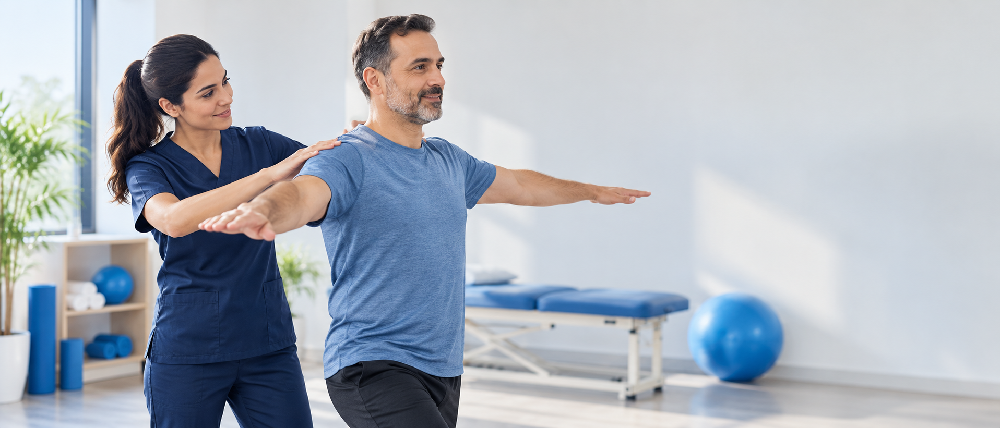

STRIDE CLINIC · رحلة الحركةكل خطوة
كل خطوة
تستحق بداية أفضل.
تحرّك بثقة، خطوة بخطوة

تمارينك في مكان واحد 0
اختر منطقة العلاج المناسبة أو ابحث عن التمرين بالاسم.
لا توجد تمارين متاحة الآن.
متابعة أسهل
سجّل تقدّمك، وشارك تقريرك مع العيادة.
أجب عن استبيان المتابعة ثم أرسله إلى فريقك العلاجي بالطريقة المناسبة لك
من صفحة العيادة
فيديو من Stride Clinic
شاهد الفيديو هنا، أو افتحه مباشرة على فيسبوك إذا لم يظهر المشغّل في متصفحك.
فتح الفيديو على فيسبوك ↗المتابعة
أكمل الإجابات، ثم احفظ تقريرك وأرسله إلى العيادة.
لا توجد استبيانات متاحة الآن.